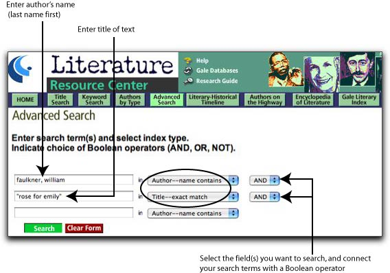
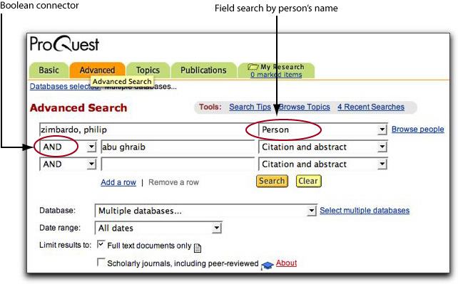

| Contents: | ||||
| Find Reference Books | Find Books and eBooks | Find Articles | Find Web Sites | Cite Your Sources | ||||
FIND REFERENCE BOOKS
The following reference books, shelved in the Reference Room, provide information about the genre of the short story and critical analysis of specific literary texts. Some of the works cited below have similar titles for other literary genres, including the novel, drama, and poetry.
Critical Survey of Short Fiction. 7 vols. Call No.: ref PN 3321 .C7 1993
Arranged alphabetically by author’s last name, this collection of essays places the author’s opus in a critical context and provides annotated bibliographies to direct readers to other sources about the authors and their works.
Masterplots II, Short Story Series. 10 vols. Call No.: ref PN 3326 .M27 1986
Contains plot summaries and analyses of themes, meaning, style, and technique of commonly studied short stories. Arrangement is alphabetical by title of text.
Short Story Criticism. 47 vols. Call No.: ref PN 3373 .S386
Provides excerpts of critical texts.
Short Stories for Students. 11 vols. Call No.: ref PN 3373 .S86
Presents analysis, author biographies, context, and criticism of frequently anthologized short stories.
Twentieth-Century Short Story Explication. New Series. 4 vols. Call No.: ref PN 3373 .W35
Contains bibliographies of interpretations of canonical short stories, arranged alphabetically by author’s last name, then by title of text.
Other Useful Reference Books
Specialized dictionaries and encyclopedias
- American Writers. 13 vols. ref PS 129 .A55
- The Concise Oxford Dictionary of Literary Terms. ref PN 41 .C67 1990
- A Dictionary of Literary Terms and Literary Theory. 4th ed. ref PN 41 .C83 1998
- Encyclopedia of Literature. ref PN 41 .M42 1995
- A Glossary of Literary Terms. 7th ed. ref PN 41 .A184 1999
- A Handbook of Literature. ref PN 41 .H6 1992
- A Multicultural Dictionary of Literary Terms. ref PN 41 .C28 1999
Feminist literary criticism
- American Women Writers. 5 vols. ref PS 147 .A4
- Cambridge Guide to Women’s Writing in English. ref PR 111 .S24 1999
- Feminist Writers. ref PN 451 .F46 1996
- Masterplots II, Women’s Literature Series. ref PN 471 .M37 1995
- Modern American Women Writers. ref PS 151 .M54 1990
- The Oxford Companion to Women’s Writing in the United States. ref PS 147 .O94 1995
African American literary criticism
- African American Literary Criticism. ref PS 153 .N5 A33 1999
- Harlem Renaissance and Beyond. ref PS 153 .N5 R65 1990
- Masterpieces of African American Literature. ref PS 153 .N5 M264 1992
- Masterplots II, African American Series. ref PS 153 .N5 M2645 1994
- The Oxford Companion to African American Literature. ref PS 153 .N5 O96 1997
Asian American literary criticism
- Asian American Literature. ref PS 153 .A84 A83 1997
- Asian American Literature: An Annotated Bibliography. ref PS 153 .A84 C538 1998
- Asian American Women Writers. ref PS 153 .A84 A83 1997
Hispanic/Latino literary criticism
- Dictionary of Literary Biography: Chicano Writers. ref PS 153 .M4 C485 1999
- Hispanic Literature Criticism. 4 vols. ref PQ 7081 .A1 H573 1994
- Hispanic Writers. ref PQ 7081.3 .H58 1991
- Masterpieces of Latino Literature. 4 vols. ref PQ 7081 .A1 H573 1994
- World Literature and Its Time: Latin American Literature. ref PQ 7081 .M625 1999
Native American literary criticism
- Handbook of Native American Literature. ref PM 155.D53 1996
- Native American Literatures. ref PS 153 .I52 W47 1999
- Native American Women Writers. ref PS 153 .I52 N38 1998
Print indexes
- Essay and General Literature Index. Index. ref AI 3 .E752
- Humanities Index. Index. ref AI 3 .H85
- MLA International Bibliography. (Note: An online version is available, but the Library does not subscribe to it at this time.) ref Z 7006 .M64. 1963-1991
FIND BOOKS AND eBOOKS
The Library’s online catalog, called Voyager, indexes books, eBooks, videos, and other material by subject, author, title, keyword, and call number. By searching Voyager, you may identify author biographies, critical texts, and literary texts.
To search Voyager by subject, enter your search term (if it’s an author’s name, remember to enter the last name first), then click on “subject search” in the pull-down menu on the right of the screen.
Faulkner, William [Subject Search]
Gilman, Charlotte Perkins
[Subject Search]
Poe, Edgar Allan
[Subject Search]
Short stories, American--History and criticism
[Subject Search]
Feminist literary criticism
[Subject Search]
To narrow your search to literary criticism on a particular author, select the following sample subheadings:
Faulkner, William, 1897-1962 Criticism and interpretation
[Subject Search]
Poe, Edgar Allan, 1809-1849. The fall of the house of Usher
[Subject Search]
Keyword searching allows you to search by descriptive words.
| Since LBCC Library has a partnership agreement with CSULB, you may check out books from the University Library. To identify books, search CSULB's online catalog, called Coast, which is accessible over the Web at http://coast.csulb.edu. | ||
| FIND ARTICLES |
| The Library subscribes to a number of online databases, which are accessible over the World Wide Web, from remote computers or those located in the Library. These databases index and abstract articles, and in many cases, provide the full text, enabling you to print or email a copy. |
||
Literature Resource Center |
||
| This database contains full-text biographical and critical information about authors, literary movements, themes, and genres. Once you have selected Literature Resource Center from the list of available databases, click on the button labeled "Authenticate." You will see a list of GaleNet databases. Once more, click on Literature Resource Center. There are many ways to search this database. For the purpose of your assignment you may want to enter an advanced search in order to search for a particular author and text, as shown below: |
||
|  | ||
On the results screen, you may then click on the tab labeled "Literary Criticism, Articles, & Work Overviews" to display full-text articles of critical sources. |
||
ProQuest |
||
| ProQuest indexes literature published in newspapers, magazines, and journals. Illustrated below is an examle of an advanced search: |
||
|  | ||
| FIND WEB SITES |
|||
| Several useful Web sites, related to literature, are accessible from the Library's homepage at http://lib.lbcc.edu. Click on "Internet Resources," then click on "Literature." You will see a list of relevant sites. Since the list contains hypertext links, simply click on the site you want to visit. (Note: Information on the Web is extremely dynamic, and some of the links may be "dead"--that is, they may no longer work.) Use a subject directory, such as those listed below, to find annotated and reviewed listings of Web sites by subjectects. |
|||
| Librarians' Index to the Internet (LII) |
http://www.lii.org | ||
| Infomine |
http://infomine.ucr.edu | ||
Use search engine to do a keyword search. |
|||
| Google |
http://www.google.com | ||
| Google Scholar | http://scholar.google.com | ||
| Ask.com |
http://www.ask.com | ||
When selecting additional Web sites for research, consult Five Criteria for Evaluating Web Pages to learn how to identify authoritative Web pages that are suitable for research purposes. |
|||
| CITE YOUR SOURCES |
|
| Remember to list the sources used in your research in a bibliography or works-cited page following a documentation styles, such as MLA (Modern Language Association). The most up-to-date guides for citing Web pages and other electronic sources are on the Web, and they are accessible from the Library's homepage. Click on "Internet Resources," then click on "Citation Guides." | |
| Contents: | ||||
| Find Reference Books | Find Books to Check Out | Find Articles | Find Web Sites | Cite Your Sources | ||||